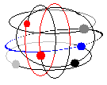
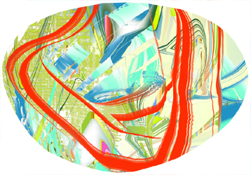

people doing strange things with electricity
The seventeen millionth dorkbot-nyc meeting was held on Wednesday, November 3rd, 7pm at
Location One in SoHo.
It Featured the lovely and talented:
 Tom Moody: THE FUTURE OF THE AUTONOMOUS ART OBJECT IN A WIRED WORLD, OR, HOW BLOGGING CHANGED MY ART LIFE.
Moody's low-tech art made with MSPaintbrush, photocopiers, and consumer printers has appeared in solo shows at Derek Eller Gallery and UP&CO in New York, as well as group shows such as "Ink Jet" at the Aldrich Contemporary Art Museum, "Byte Size" at homeroom gallery in Munich, and the "Infinite Fill Show" at Foxy Production. After writing for many years for Artforum, Sculpture, Art Papers, and other publications, he began weblogging in February 2001 and served as an Eyebeam reBlogger from Sept. 3 - 22, 2004.
http://www.digitalmediatree.com/tommoodyMatt Hall and John Watkinson: Cell Phone Drum Machine
A software drum machine is linked to a mobile phone via infrared. The phone relays SMS messages it receives to the drum machine's software. Users can send simple commands in SMS messages from their own phones. The result is a drum machine that is programmed interactively by the "audience" with their cellphones.
http://tronics.org/drum
 Claire Corey: Digital Paintings
Claire will present her digital paintings including an animation which shows the progression of one of her works from 2002. This hybrid medium questions both what is expected from works made with a computer as well as what constitutes painting. http://www.clairecorey.com
I'm a dolt and I forgot to bring my camera! So if anyone has any images from the meeting please send them to me
and I'll gladly post them here...